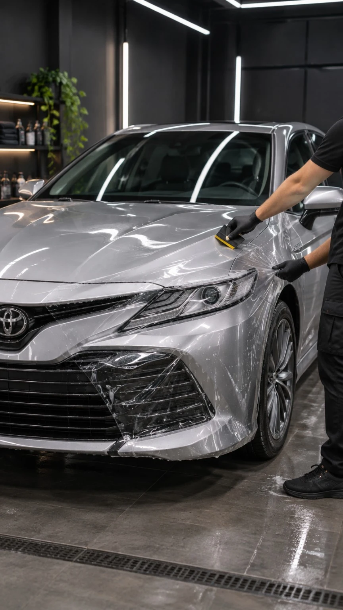
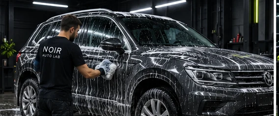
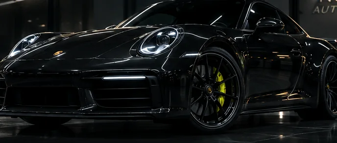
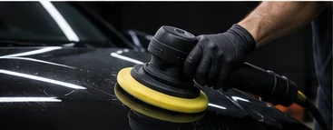
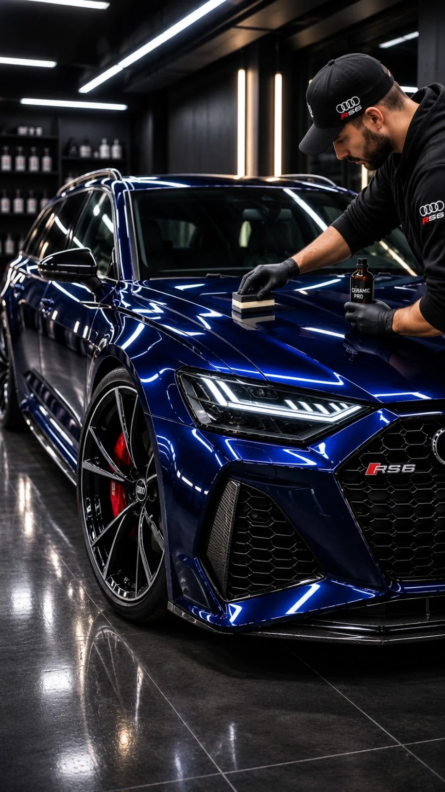
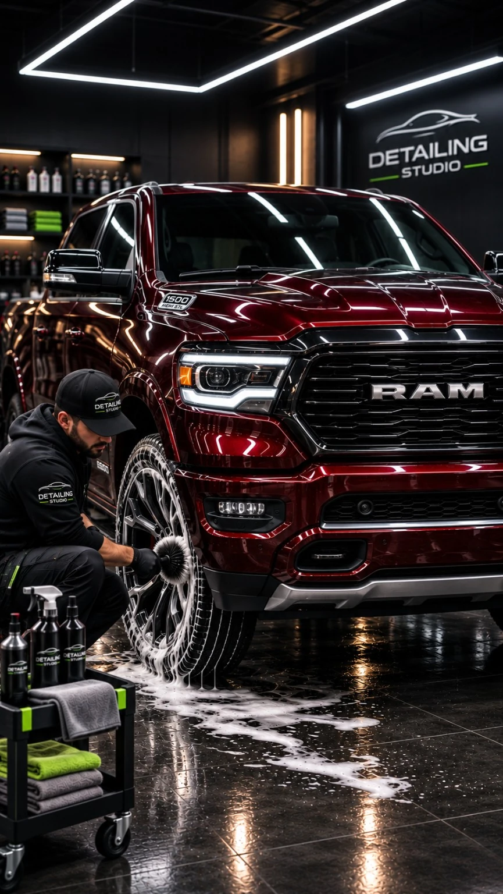
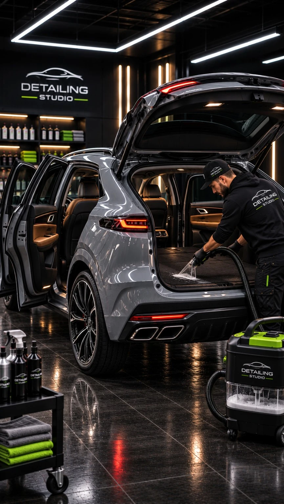
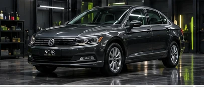
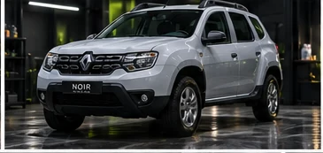
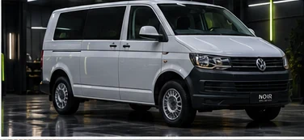

CONCEPT / 01Дорожные зоны рискаГОРОДСКОЙ АВТОМОБИЛЬ
Защита передней части
Иллюстрация нанесения защитной плёнки на переднюю часть автомобиля.
PPF, керамика и детейлинг с уважением к каждой линии кузова. Помогаем подобрать объём защиты с учётом состояния кузова и условий эксплуатации.

Защита помогает сохранить внешний вид между визитами в детейлинг. Выберите степень сравнения — ползунок показывает стилизованную визуализацию.


Это художественная визуализация, а не фотография реального результата или подтверждённое испытание покрытия.
Полиуретановая плёнка принимает на себя часть мелких дорожных воздействий. Керамическое покрытие помогает упростить уход и поддерживать выраженный блеск. Подходящий вариант зависит от состояния ЛКП и сценария эксплуатации.
Сценарии будущего портфолио: повседневные автомобили и мастера во время реальных по типу операций. Листайте свайпом или стрелками. Нажмите на работу, чтобы открыть фото на весь экран.

CONCEPT / 01Дорожные зоны рискаИллюстрация нанесения защитной плёнки на переднюю часть автомобиля.

CONCEPT / 02Глубина цвета и уходИллюстрация подготовки кузова к нанесению защитного состава.

CONCEPT / 03Чистота каждой линииИллюстрация ручной и машинной обработки кузова кроссовера.

CONCEPT / 04Поверхности под контролемИллюстрация профессиональной очистки сидений и труднодоступных зон.
Демонстрационное портфолио: описания проектов вымышлены, фотографии иллюстративные. Не представляют выполненные заказы NOIR AUTO LAB.
Городские седаны, семейные кроссоверы, хэтчбеки и коммерческий транспорт. Четыре иллюстративных примера для будущего портфолио.



Фотографии — сгенерированные иллюстрации, не реальные заказы или подтверждённые результаты.
ESSENTIAL — сфокусированная защита зон риска. SIGNATURE — комплексный сценарий для тех, кто хочет проработать больше поверхностей.
Ориентировочная цена для демонстрационного проекта. Итог зависит от модели, состояния кузова, материала и площади работ.
Комплектация, материалы, сроки и окончательная стоимость подтверждаются после осмотра автомобиля.
Качество начинается с диагностики и понятных договорённостей. Мы показываем, что входит в работу, и согласуем решения до старта.
Обсуждаем цели, оцениваем состояние кузова, выбираем зоны защиты и фиксируем объём работ.
Подготавливаем поверхность, выполняем согласованные работы и внимательно прорабатываем сложные элементы.
Осматриваем результат, объясняем особенности ухода и согласуем рекомендации для первых дней после выдачи.
Внимание к деталям начинается с диалога. Ниже — примеры того, как будет выглядеть блок настоящих отзывов.
«Хотелось заранее понимать, какие зоны действительно стоит защищать. Понравилось бы, если бы все варианты объяснили простым языком ещё до записи.»
Вымышленный пример отзыва
«Для меня важны аккуратность, сроки и предсказуемая смета. Именно такая подробная консультация помогла бы спокойно принять решение.»
Вымышленный пример отзыва
«Не ищу лишних услуг: хочу понимать, что входит в пакет и как ухаживать за покрытием. Описание без громких обещаний вызывает больше доверия.»
Вымышленный пример отзыва
«Здорово, когда можно собрать предварительный вариант онлайн, а потом обсудить его со специалистом и скорректировать под свой автомобиль.»
Вымышленный пример отзыва
Все имена, цитаты и описания клиентов в этом блоке придуманы для макета. Здесь не публикуются настоящие отзывы.
Выберите тип автомобиля, уровень защиты и дополнительные работы. Смета обновится сразу — значения условные и нужны для демонстрации логики калькулятора.
Оставьте контакты и расскажите, что за автомобиль. В этом прототипе заявка никуда не отправляется — вы увидите только подтверждение на экране.
Демонстрационная работа · фото и описание иллюстративные
Это демонстрационный проект. Аналогичный сайт можно адаптировать под ваш бренд, услуги и задачи — без лишней сложности.
Посмотреть автора проекта